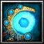

트리플 스노우
[지팡이]
- 데미지 +21500
- 지능 +2350
- HP +7500
- 스킬 시전시 다음 공격을 얼음으로 강화
- 지능 X 15의 마법 데미지를 가하고 대상을 슬로우시킴
- 사용시 글래이셜 스톰 발동
- 4초간 대상 지점으로부터 500 반경 내의 적을 지속적으로 1초씩 얼리며 취약 상태로 만든다
- 지속 시간에 걸쳐 총 지능 X 100의 데미지를 가한다
- 취약 상태의 적은 공격 받을시 (시전자의 지능 X 1.5)의 순수 데미지 피해를 받는다 (쿨다운 0.1초)
- 쿨다운: 90초
- 물/얼음 속성 효율 +7.5%
특수 효과
- 정령사 특수 효과 - 워터 마스터리
- 물의 각인: 지속 시간 10초 증가, HP 40% 증가
- 워터 빔: 사거리 150, 회복 가능한 대상 수 1 증가
- 상쾌한 샘물: 반경 150 증가